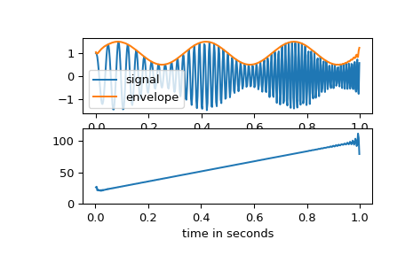

scipy.signal.hilbert¶
-
scipy.signal.hilbert(x, N=None, axis=-1)[source]¶ Compute the analytic signal, using the Hilbert transform.
The transformation is done along the last axis by default.
- Parameters
- xarray_like
Signal data. Must be real.
- Nint, optional
Number of Fourier components. Default:
x.shape[axis]- axisint, optional
Axis along which to do the transformation. Default: -1.
- Returns
- xandarray
Analytic signal of x, of each 1-D array along axis
Notes
The analytic signal
x_a(t)of signalx(t)is:\[x_a = F^{-1}(F(x) 2U) = x + i y\]where F is the Fourier transform, U the unit step function, and y the Hilbert transform of x. [1]
In other words, the negative half of the frequency spectrum is zeroed out, turning the real-valued signal into a complex signal. The Hilbert transformed signal can be obtained from
np.imag(hilbert(x)), and the original signal fromnp.real(hilbert(x)).References
- 1
Wikipedia, “Analytic signal”. https://en.wikipedia.org/wiki/Analytic_signal
- 2
Leon Cohen, “Time-Frequency Analysis”, 1995. Chapter 2.
- 3
Alan V. Oppenheim, Ronald W. Schafer. Discrete-Time Signal Processing, Third Edition, 2009. Chapter 12. ISBN 13: 978-1292-02572-8
Examples
In this example we use the Hilbert transform to determine the amplitude envelope and instantaneous frequency of an amplitude-modulated signal.
>>> import numpy as np >>> import matplotlib.pyplot as plt >>> from scipy.signal import hilbert, chirp
>>> duration = 1.0 >>> fs = 400.0 >>> samples = int(fs*duration) >>> t = np.arange(samples) / fs
We create a chirp of which the frequency increases from 20 Hz to 100 Hz and apply an amplitude modulation.
>>> signal = chirp(t, 20.0, t[-1], 100.0) >>> signal *= (1.0 + 0.5 * np.sin(2.0*np.pi*3.0*t) )
The amplitude envelope is given by magnitude of the analytic signal. The instantaneous frequency can be obtained by differentiating the instantaneous phase in respect to time. The instantaneous phase corresponds to the phase angle of the analytic signal.
>>> analytic_signal = hilbert(signal) >>> amplitude_envelope = np.abs(analytic_signal) >>> instantaneous_phase = np.unwrap(np.angle(analytic_signal)) >>> instantaneous_frequency = (np.diff(instantaneous_phase) / ... (2.0*np.pi) * fs)
>>> fig = plt.figure() >>> ax0 = fig.add_subplot(211) >>> ax0.plot(t, signal, label='signal') >>> ax0.plot(t, amplitude_envelope, label='envelope') >>> ax0.set_xlabel("time in seconds") >>> ax0.legend() >>> ax1 = fig.add_subplot(212) >>> ax1.plot(t[1:], instantaneous_frequency) >>> ax1.set_xlabel("time in seconds") >>> ax1.set_ylim(0.0, 120.0)
